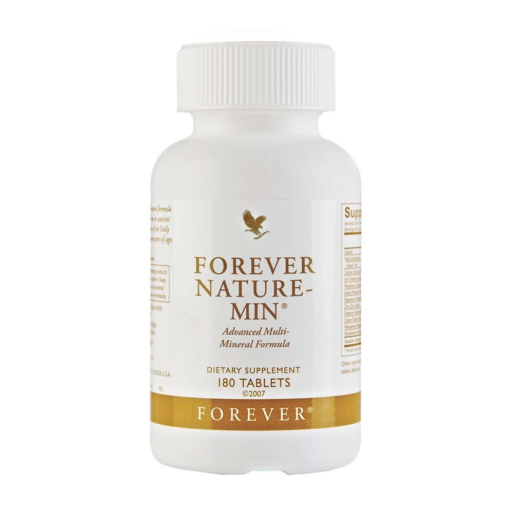
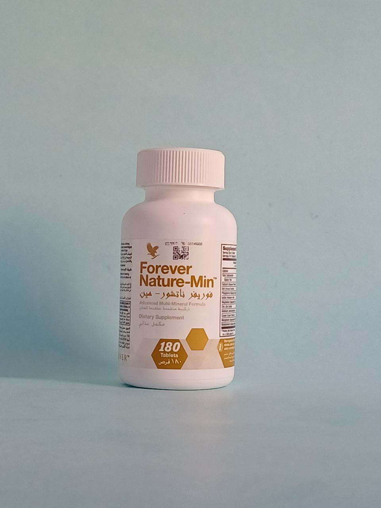
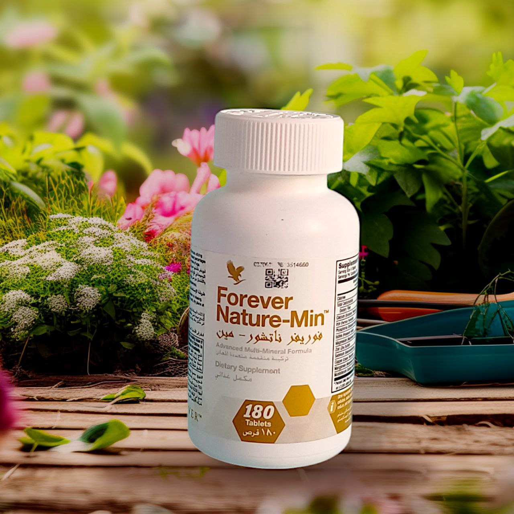

مزيج مثالي متعدد المعادن
أنت مدرك أن الفيتامينات تحافظ على جسمك و مليئة بالعناصر الغذائية الأساسية. ولكن هل تعلم أن المعادن المتعددة مهمة بنفس القدر؟ تلعب المعادن دورًا مهم جدًا في الترطيب المناسب في صحة العضلات وحتى وظائف الدماغ. ومع ذلك، فإن جسم الإنسان لا يمكنه حل محل معادنه المفقودة ، لذا يجب معالجة النقص بنظام غذائي أو المكملات.
تركيبة فوريفر نيتشر-مين® مصممة لمساعدة جسمك في الحفاظ على مستوياته المعدنية مع مستويات مثالية من 10 معادن أساسية.
مكملنا سهل الهضم و يحتوي على مزيج مثالي من المعادن الكلية والنادرة. المعادن الكلية هي تلك التي يحتاجها جسمك بكميات أكبر، مثل المغنيسيوم لوظيفة العضلات والكهارل التي تساعد على تنظيم توازن السوائل وترطيبها.
المعادن النزرة مطلوبة بكميات أقل، لكن هذا لا يجعلها أقل أهمية. من المعروف أن الزنك ، على سبيل المثال ، يعمل كمحفز لما يقرب من 100 إنزيم ويساعد في العديد من الوظائف الحيوية، مثل تخليق الحمض النووي والبروتين.